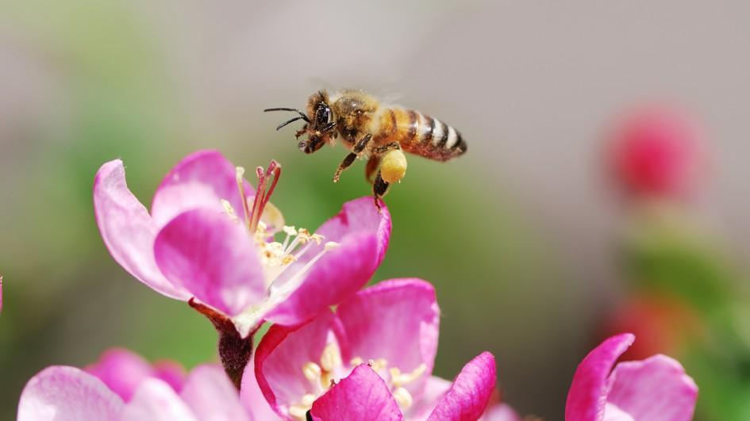

Honeybees live in colonies with one queen running the whole hive. Worker honeybees are all females and are the only bees most people ever see flying around outside of the hive. They forage for food, build the honeycombs, and protect the hive. Many species still occur in the wild, but honeybees are disappearing from hives due to colony collapse disorder.Scientists are not sure what is causing this collapse.

|
|
Honeybees are important pollinators for flowers, fruits, and vegetables. They live on stored honey and pollen all winter and cluster into a ball to conserve warmth. All honeybees are social and cooperative insects. Members of the hive are divided into three types. Workers forage for food (pollen and nectar from flowers), build and protect the hive, clean, and circulate air by beating their wings. The queen's job is simple-she lays the eggs that will spawn the hive's next generation of bees. There is usually only a single queen in a hive. If the queen dies, workers will create a new queen by feeding one of the worker females a special food called "royal jelly." This elixir enables the worker to develop into a fertile queen
Queens regulate the hive's activities by producing chemicals that guide the behavior of the other bees. Male bees are called drones-the third class of honeybee. Several hundred drones live in each hive during the spring and summer, but they are expelled for the winter months when the hive goes into a lean survival mode.
 |
 |